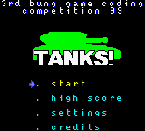
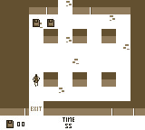

RealBoy
Dieser Artikel wurde für die folgenden Ubuntu-Versionen getestet:
Ubuntu 14.04 Trusty Tahr
Zum Verständnis dieses Artikels sind folgende Seiten hilfreich:
RealBoy  ist ein Nintendo® GameBoy™-Emulator, welcher in der Programmiersprache C und Assembler geschrieben wurde. Das Programm nutzt SDL und OpenGL. Die meisten Nintendo® GameBoy™ Classic, Nintendo® GameBoy™ Color und Super GameBoy™ Spielmodule - im weiteren ROM genannt - werden unterstützt. Die Spielsteuerung erfolgt über die Tastatur.
ist ein Nintendo® GameBoy™-Emulator, welcher in der Programmiersprache C und Assembler geschrieben wurde. Das Programm nutzt SDL und OpenGL. Die meisten Nintendo® GameBoy™ Classic, Nintendo® GameBoy™ Color und Super GameBoy™ Spielmodule - im weiteren ROM genannt - werden unterstützt. Die Spielsteuerung erfolgt über die Tastatur.
|  |  |
| Tanks | Espionage |
RealBoy wurde zu Bildungszwecken entwickelt und es existiert eine Reihe Posts auf der Webseite, wo die Entwicklung erklärt ist. Der Fokus lag bei der Entwicklung laut Angaben des Entwicklers auf Genauigkeit und Vollständgkeit. RealBoy besitzt folgende Funktionen:
experimentelle Super Game Boy Unterstützung
Unterstützung für originale Boot-ROMs
eingebauter Debugger
Kontrolle über FPS
Ton
Bildskalierung 1, 2, 3 und 4-fach
Kantenglättung
Installation¶
RealBoy ist nicht in den offiziellen Paketquellen enthalten. Die Quelldateien können aber heruntergeladen und einfach kompiliert [1] werden.
Hinweis!
Fremdsoftware kann das System gefährden.
Anmerkung: Es sollte nur Software aus vertrauenswürdigen Quellen verwendet werden.
Zuerst muss das Quellcode-Archiv von der SourceForge-Seite heruntergeladen und danach entpackt [5] werden. Entpacken kann man das Archiv ganz einfach über "Rechtsklick auf die Datei > Hier entpacken".
Anschließend muss die SDL-Bibliothek installiert werden, da diese zum kompilieren von RealBoy benötigt wird:
libsdl-dev (main)
 mit apturl
mit apturl
Paketliste zum Kopieren:
sudo apt-get install libsdl-dev
sudo aptitude install libsdl-dev
Zuletzt muss das Programm nur noch kompiliert [1] werden.
Unter 64Bit-Systemen verwendet man folgenden configure-Befehl:
./configure --disable-asm
Bedienung¶
RealBoy wird standardmäßig mittels Tastatur gesteuert. Die Spielsteuerung lässt sich umstellen, die Steuerung der Software selbst nicht.
Konfiguration¶
Beim ersten Start legt RealBoy ein Verzeichnis ~/.realboy im Homeverzeichnis an um seine Einstellungen und Spielstände zu speichern. Um die Einstellungen des Emulators permanent zu verändern, öffnet man im Ordner ~/.realboy die Datei RealBoy.conf mit einem Editor [3] und bearbeitet diese:
# RealBoy Configuration File. # Key mappings A='d' B='s' Start='\n' Select='a' # Frame rate setting. Values are from 10 to 60 inclusive. frame_rate="60" # Video Scale: 1x, 2x, 3x, 4x. video_scale="1" # Use fullscreen mode. 0=false, any other value means true video_fullscreen="0" # Use boot ROM. 0=false, any other value means true boot_rom="0" # Game Boy type. 0=Auto, 1=Force DMG, 2=Force CGB, 3=Force SGB gboy_type="0"
Die Parameter sind weitgehend selbsterklärend - jedoch auch in der nachfolgenden Tabelle beschrieben.
Parameter¶
Die folgenden Befehle setzen vorübergehend Einstellungen von RealBoy, permanente Einstellungen sind in der Konfigurationsdatei vorzunehmen.
| Kommandozeilenoptionen | |
| Option | Bedeutung |
--1, --video-1x | Standardskalierung 1:1 |
--2, --video-2x | 2-fache Vergrößerung |
--3, --video-3x | 3-fache Vergrößerung |
--4, --video-4x | 4-fache Vergrößerung |
-r, --frame-rate=RATE | Setze Bildrate auf 10 bis 60 |
-f, --fullscreen | Vollbild |
-b, --with-boot | Start mit GameBoy Bios-ROM |
-h, --help | Hilfe |
-d, --debug | Aktiviert GDDB Debugger |
-v, --version | zeigt Versionsnummer und beendet RealBoy |
-D, --DMG | erzwingt GameBoy-Modus |
-C, --CGB | erzwingt GameBoy-Color-Modus |
-S, --SGB | erzwingt Super-GameBoy-Modus |
Tastenkürzel¶
Tasten zur Steuerung in der Emulation:
| Tastenkürzel | |
| Taste | Tastenentsprechung auf dem GameBoy |
| ⏎ | Start |
| A | Select |
| D | A |
| S | B |
 | Steuerung der Spielfigur |
Nicht veränderbare Tasten:
| Tastenkürzel | |
| Taste | Funktion |
| 1 | Skalierung 1x |
| 2 | Skalierung 2x |
| 3 | Skalierung 3x |
| 4 | Skalierung 4x |
| 5 | Kantenglättung aktivieren/deaktivieren |
| 6 | Vollbild aktivieren/deaktivieren |
| 7 | Emulation anhalten und GDDB Debugger starten |
| 8 | konfigurierbare Tasten vorübergehend ändern |
| . | Emulation beschleunigen |
| Esc | RealBoy beenden |
- Erstellt mit Inyoka
-
 2004 – 2017 ubuntuusers.de • Einige Rechte vorbehalten
2004 – 2017 ubuntuusers.de • Einige Rechte vorbehalten
Lizenz • Kontakt • Datenschutz • Impressum • Serverstatus -
Serverhousing gespendet von